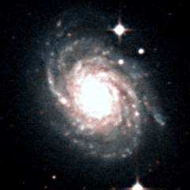
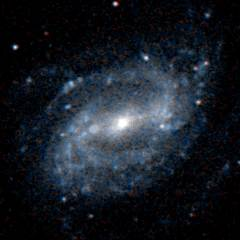
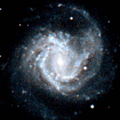
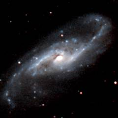
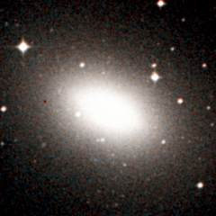
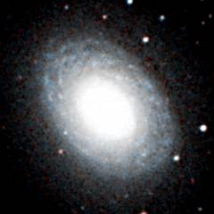
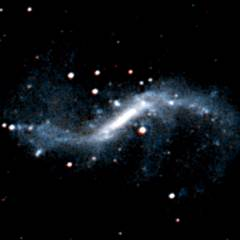
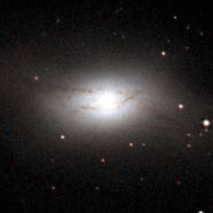
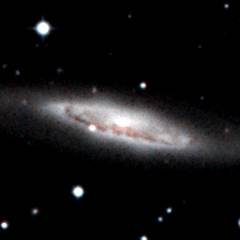

The Virgo II Groups are the long southern extension to the Virgo cluster. Beginning with the M61 group and the NGC 4753 group which are the two groups which form the southern boundary of the Virgo cluster, this band of galaxies stretches southwards past the large NGC 4697 and NGC 4699 groups and terminating 30 million light years from the Virgo cluster with a group of galaxies around the very massive NGC 5084 galaxy.
Below - three galaxies in the Virgo II Groups. NGC 4030 (left) is the brightest galaxy in a small group located to the lower-right of the Virgo cluster. NGC 4123 (centre) is a barred spiral galaxy nearby in the NGC 4179 group. M61 (right) is a famous spiral galaxy and the brightest member of a sub-group of galaxies on the southern edge of the Virgo cluster.
|  |  |  |
| NGC 4030 | NGC 4123 | M61 |
Shown below is a picture of M104. This is a very famous galaxy called the Sombrero Galaxy. It is a spiral galaxy with a very large central bulge. Although this galaxy can be found among the Virgo II groups, it is actually a foreground galaxy 30 million light years from us - 20 million light years in front of the Virgo II galaxies.
This is a list of the main Virgo II Groups. It can be difficult to determine which galaxies belong to which group especially around the southern edge of the Virgo cluster where there is a confusion of galaxies at different distances.
1 2 3 4 5 6 7 8
Name Equatorial Blue Type Size Size RV
Coordinates Mag (') kly km/s
RA Dec
NGC 4030 Group Distance = 60 million ly
UGC 6970 11 58.8 -01 28 14.7 Sm 1.2 20 1838
NGC 4030 12 00.4 -01 06 11.7 Sbc 3.9 70 1814
UGC 7000 12 01.2 -01 18 14.3 Irr 1.0 20 1847
NGC 4179 Group Distance = 55 million ly
UGC 7035 12 03.7 +02 38 14.9 Sa 1.3 20 1577
NGC 4116 12 07.6 +02 41 12.6 SBcd 3.5 55 1659
NGC 4123 12 08.2 +02 53 12.3 SBc 4.1 65 1675
NGC 4179 12 12.9 +01 18 11.8 S0 4.2 65 1595
M61 Group Distance = 55 million ly
NGC 4255 12 18.9 +04 47 13.6 S0 1.3 20 2173
UGC 7387 12 20.3 +04 12 15.1 Scd 1.9 30 2075
M61/NGC 4303 12 21.9 +04 28 10.2 SBbc 6.2 100 1911
NGC 4324 12 23.1 +05 15 12.5 S0 2.8 45 2007
UGC 7522 12 26.0 +03 26 14.5 Sc 2.8 45 1765
NGC 4420 12 27.0 +02 30 12.9 SBc 2.0 30 2029
PGC 40951 12 28.1 +02 55 15.2 Irr 1.0 15 1826
UGC 7612 12 29.0 +02 43 14.8 SBm 2.0 30 1913
NGC 4496A 12 31.7 +03 56 12.1 SBd 3.8 60 2067
NGC 4517A 12 32.5 +00 23 13.1 SBd 3.8 60 1869
IC 3474 12 32.6 +02 40 14.8 Scd 2.2 35 2070
NGC 4527 12 34.1 +02 39 11.5 SBbc 5.9 95 2068
NGC 4533 12 34.4 +02 20 14.6 Scd 2.0 35 2095
NGC 4536 12 34.4 +02 11 11.1 SBbc 7.2 115 2140
UGC 7780 12 36.7 +03 06 15.5 SBd 1.7 25 1777
NGC 4581 12 38.1 +01 29 13.4 E 1.7 30 2139
NGC 4599 12 40.5 +01 12 13.7 Sa 1.7 30 2173
NGC 4632 12 42.5 -00 05 12.6 Sc 2.8 45 2051
NGC 4753 Group Distance = 55 million ly
UGC 7824 12 39.8 +01 40 15.0 Sm 1.6 25 1561
NGC 4636 12 42.8 +02 41 10.4 E 6.5 105 1393
NGC 4643 12 43.3 +01 59 11.6 S0 3.2 50 1658
UGC 7911 12 44.5 +00 28 13.8 SBm 2.4 40 1515
NGC 4688 12 47.8 +04 20 13.5 SBc 3.7 60 1313
NGC 4691 12 48.2 -03 20 12.0 Sa 3.0 50 1442
UGC 7982 12 49.8 +02 51 14.0 Sbc 3.4 55 1484
NGC 4753 12 52.4 -01 12 11.1 S0 5.5 90 1724
NGC 4771 12 53.4 +01 16 12.9 Sc 3.6 60 1456
NGC 4772 12 53.5 +02 10 12.1 Sa 3.3 55 1366
UGC 8041 12 55.2 +00 07 13.5 SBcd 3.2 50 1666
NGC 4808 12 55.8 +04 18 12.3 Sc 2.4 40 1085
NGC 4845 12 58.0 +01 35 12.1 Sab 5.0 80 1421
NGC 4900 13 00.7 +02 30 12.0 SBc 2.2 35 1288
NGC 4904 13 01.0 -00 02 13.0 SBc 2.1 35 1495
NGC 4697 Group Distance = 55 million ly
MCG-1-33-1 12 44.1 -05 41 13.1 Sd 3.0 50 1765
MCG-1-33-3 12 45.7 -06 04 13.6 SBm 3.1 50 1809
NGC 4697 12 48.6 -05 48 10.4 E 5.9 95 1569
MCG-1-33-11 12 48.7 -05 15 ? Irr 1.8 30 1673
NGC 4731 12 51.0 -06 23 12.1 SBc 6.3 100 1825
MCG-1-33-33 12 52.6 -06 17 ? Irr 2.1 35 1861
NGC 4775 12 53.8 -06 37 12.2 Scd 2.2 35 1896
IC 3908 12 56.7 -07 34 13.5 Scd 2.2 35 1627
UGCA 310 12 57.2 -04 10 14.5 Irr 1.6 25 1865
MCG-1-33-59 12 57.3 -05 21 13.8 Sd 1.7 25 1586
MCG-1-33-61 12 58.8 -06 07 15.0 Sd 1.7 25 1931
NGC 4941 13 04.2 -05 33 12.0 SBab 3.5 55 1433
NGC 4948 13 04.9 -07 57 13.8 SBd 2.1 35 1649
NGC 4948A 13 05.1 -08 10 14.1 SBd 1.4 25 1874
NGC 4951 13 05.1 -06 30 12.6 SBc 3.2 50 1500
MCG-1-33-82 13 05.2 -07 53 16.3 Irr 1.1 20 1444
NGC 4958 13 05.8 -08 01 11.7 S0 4.3 70 1438
NGC 4699 Group Distance = 55 million ly
NGC 4699 12 49.0 -08 40 10.6 SBb 3.9 60 1759
NGC 4700 12 49.1 -11 25 12.4 SBc 2.9 45 1737
MCG-2-33-15 12 49.4 -10 07 13.2 SBm 3.5 55 1644
NGC 4722 12 51.5 -13 20 13.6 Sa 1.9 30 1640
NGC 4742 12 51.8 -10 27 12.4 E 2.2 35 1607
MCG-2-33-47 12 54.0 -12 07 14.9 Irr 2.0 30 1151
NGC 4781 12 54.4 -10 32 11.7 SBcd 3.3 55 1590
NGC 4790 12 54.9 -10 15 13.3 SBc 1.5 25 1685
NGC 4802 12 55.8 -12 03 12.3 S0 2.5 40 1347
NGC 4818 12 56.8 -08 31 12.1 SBab 3.5 55 1393
MCG-1-33-60 12 57.8 -09 38 13.8 Scd 3.2 50 1813
MCG-2-33-85 13 00.3 -12 21 14.4 Irr 1.8 30 1905
NGC 4856 Group Distance = 55 million ly
NGC 4856 12 59.4 -15 03 11.5 S0 4.2 65 1668
MCG-2-33-82 13 00.1 -15 22 14.4 Irr 1.3 20 1913
MCG-2-33-88 13 00.7 -15 43 ? Irr 1.7 30 1706
MCG-3-33-32 13 06.3 -15 31 16.3 Irr 1.6 25 1778
NGC 4984 13 09.0 -15 31 12.2 S0 3.1 50 1522
NGC 4995 Group Distance = 70 million ly
NGC 4942 13 04.3 -07 39 13.6 SBcd 1.7 35 2073
NGC 4981 13 08.8 -06 47 12.3 SBbc 2.7 55 2000
NGC 4995 13 09.7 -07 50 12.0 SBb 2.5 50 2086
IC 4212 13 12.0 -06 60 16.4 SBc 1.9 40 1801
NGC 5084 Group Distance = 80 million ly
NGC 5084 13 20.3 -21 50 11.6 S0 10.7 250 2025
NGC 5087 13 20.4 -20 37 12.5 E 2.6 60 2119
ESO 576-50 13 24.7 -19 42 13.3 SBc 3.1 70 2279
NGC 5134 13 25.3 -21 08 12.5 SBb 3.0 70 2053
Other major Virgo II galaxies:
NGC 4457 12 29.0 +03 34 11.8 Sa 2.8 45 1218
NGC 4487 12 31.1 -08 03 12.2 SBc 3.7 60 1379
NGC 4504 12 32.3 -07 34 12.5 SBc 3.9 60 1338
NGC 4517 12 32.8 +00 07 11.1 Sc 10.2 165 1465
NGC 4546 12 35.5 -03 48 11.6 E 3.2 50 1389
NGC 4586 12 38.5 +04 19 12.6 Sa 3.9 60 1133
NGC 4592 12 39.3 -00 32 12.9 Sd 5.8 90 1409
M104/NGC4594 12 40.0 -11 37 9.1 Sa 8.3 75 1426
NGC 4597 12 40.2 -05 48 13.0 SBm 3.6 60 1380
NGC 4665 12 45.1 +03 03 11.5 S0 4.3 70 1098
NGC 4666 12 45.1 -00 28 11.8 SBc 4.4 70 1850
NGC 4684 12 47.3 -02 44 12.3 S0 2.8 45 1904
NGC 4701 12 49.2 +03 23 12.9 Sc 2.6 40 1050
MCG-3-33-30 13 03.3 -17 25 13.5 Irr 5.6 90 1062
NGC 5054 13 17.0 -16 38 11.9 Sbc 4.8 75 2049
NGC 5170 13 29.8 -17 58 12.1 Sc 8.1 130 1800
NGC 5247 13 38.1 -17 53 11.2 SBbc 5.2 85 1647
|
Column 1: The usual name of the galaxy.
Column 2: The Right Ascension for epoch 2000.
Column 3: The Declination for epoch 2000.
Column 4: The blue apparent magnitude of the galaxy.
Column 5: The galaxy type: E=Elliptical, S0=Lenticular, Sa,Sb,Sc,Sd=Spiral,
SBa,SBb,SBc,SBd=Barred Spiral, Sm,SBm,Irr=Irregular.
Column 6: The angular diameter of the galaxy (arcminutes).
Column 7: The diameter of the galaxy (thousands of light years).
Column 8: The recessional velocity (km/s) of the galaxy relative to
the cosmic microwave background.
References:
Giuricin G, Marinoni C, Ceriani L, Pisani A, (2000), Nearby optical galaxies:
selection of the sample and identification of groups. Astrophys J, 543, 178.
Garcia A, (1993), General study of group membership. II. Determination of nearby
groups. Astron Astrophys Supp, 100, 47.
Fouqué P, Gourgoulhon E, Chamaraux P, Paturel G, (1992), Groups of Galaxies within
80 Mpc, Astron and Astrophys Supp, 93, 211.
Tully R, (1982), The Local Supercluster, Astrophys J, 257, 389.
The HyperLeda Database, (2003).
Below - three galaxies in the Virgo II groups. NGC 4536 (left) is a bright spiral galaxy in the M61 group. NGC 4697 (centre) is the large bright elliptical galaxy at the centre of the NGC 4697 group. Measurements using surface brightness fluctuations, however, suggest that it may be a foreground galaxy sitting in front of the group. NGC 4699 (right) is the brightest galaxy in the NGC 4699 group.
|  |  |  |
| NGC 4536 | NGC 4697 | NGC 4699 |
Shown below is a picture of NGC 5084. This is a huge lenticular galaxy with a diameter of at least 250 million light years (and possibly closer to 300 million light years). NGC 5084 is one of the most massive galaxies in the entire Virgo supercluster, and it is at least ten times more massive than our own galaxy.
Below - three more galaxies in the Virgo II groups. NGC 4731 (left) is a galaxy in the NGC 4697 group - it is an example of a barred spiral galaxy with very short and very open spiral arms. NGC 4753 (centre) is a bright lenticular galaxy and the brightest galaxy in the NGC 4753 group which forms part of the southern edge of the Virgo cluster. Faint lanes of dust can be seen bisecting this galaxy. NGC 4845 (right) is a spiral galaxy which is also in the NGC 4753 group.
|  |  |  |
| NGC 4731 | NGC 4753 | NGC 4845 |
| Properties of the Virgo II groups | ||
|---|---|---|
| Equatorial Coordinates | RA=12h00m to 13h30m | Dec=+5° to -25° |
| Galactic Coordinates | l=275° to 315° | b=+40° to +65° |
| Supergalactic Coordinates | L=110° to 140° | B=0° to -10° |
| Distance to the groups | 55 to 80 million light years | |
| Number of large galaxies | 100 | |
| Alternative name for the groups | Virgo II Cloud | |